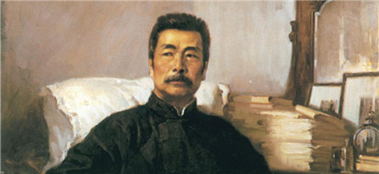

魯迅不單純是一個文學家，他還是思想家，學者，社會活動家。多重身份，多方面的工作和成就，使得魯迅的影響，並不局限於某一個領域。例如，他出色的中國小說史研究，為他在中國文學史研究領域贏得了崇高的地位和良好的聲譽；他對於木刻版画藝術的盡心培育，深刻地影響了中國現代美術界；他對衆多青年作家的熱心幫助和提攜，使他廣受青年一代的喜愛與崇敬。另外，魯迅不參加任何黨派、特立獨行的處世方式，也使他的朋友、他的影響力不受黨派的局限。
